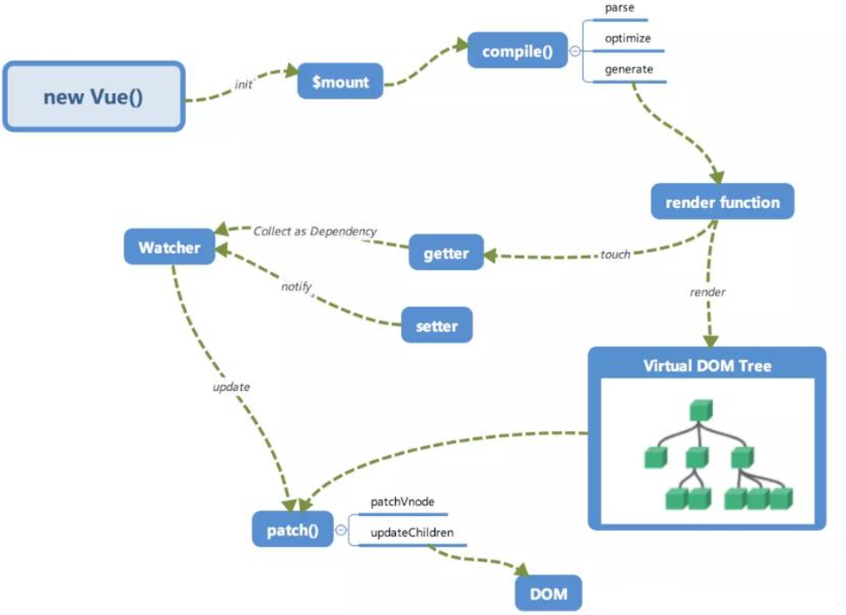

2021 Vue面试题
1.谈谈你对MVVM的理解？
为什么要有这些模式：目的：职责划分、分层 ( 将Model层、View层进行分类 ) 借鉴后端思想。对于前端而言就是如何将数据同步到页面上。
MVC模式 :Backbone + underscore + jquery对于前端而言，数据变化无法同步到视图中。需要将逻辑聚拢在controller层
MVVM模式 : 映射关系的简化 （隐藏controller）
虽然没有完全遵循 MVVM 模型，但是 Vue 的设计也受到了它的启发。因此在文档中经常会使用
vm(ViewModel的缩写) 这个变量名表示 Vue 实例。
2.请说一下Vue2及Vue3响应式数据的理解
- 数组和对象类型当值变化时如何劫持到。对象内部通过
defineReactive方法，使用Object.defineProperty将属性进行劫持（只会劫持已经存在的属性），数组则是通过重写数组方法来实现。 多层对象是通过递归来实现劫持。Vue3则采用proxy
src/core/observer/index.js:135
export function defineReactive ( // 定义响应式数据
obj: Object,
key: string,
val: any,
customSetter?: ?Function,
shallow?: boolean
) {
const dep = new Dep()
// 如果不可以配置直接return
const property = Object.getOwnPropertyDescriptor(obj, key)
if (property && property.configurable === false) {
return
}
// cater for pre-defined getter/setters
const getter = property && property.get
const setter = property && property.set
if ((!getter || setter) && arguments.length === 2) {
val = obj[key]
}
// 对数据进行观测
let childOb = !shallow && observe(val)
Object.defineProperty(obj, key, {
enumerable: true,
configurable: true,
get: function reactiveGetter () { // 取数据时进行依赖收集
const value = getter ? getter.call(obj) : val
if (Dep.target) {
dep.depend()
if (childOb) { // 让对象本身进行依赖收集
childOb.dep.depend() // {a:1} => {} 外层对象
if (Array.isArray(value)) { // 如果是数组 {arr:[[],[]]} vm.arr取值只会让arr属性和外层数组进行收集
dependArray(value)
}
}
}
return value
},
set: function reactiveSetter (newVal) {
const value = getter ? getter.call(obj) : val
/* eslint-disable no-self-compare */
if (newVal === value || (newVal !== newVal && value !== value)) {
return
}
/* eslint-enable no-self-compare */
if (process.env.NODE_ENV !== 'production' && customSetter) {
customSetter()
}
// #7981: for accessor properties without setter
if (getter && !setter) return
if (setter) {
setter.call(obj, newVal)
} else {
val = newVal
}
childOb = !shallow && observe(newVal)
dep.notify()
}
})
}
2
3
4
5
6
7
8
9
10
11
12
13
14
15
16
17
18
19
20
21
22
23
24
25
26
27
28
29
30
31
32
33
34
35
36
37
38
39
40
41
42
43
44
45
46
47
48
49
50
51
52
53
54
55
56
57
58
59
60
3.Vue中如何检测数组变化?
- 数组考虑性能原因没有用
defineProperty对数组的每一项进行拦截，而是选择重写数组（push,shift,pop,splice,unshift,sort,reverse）方法。 - 数组中如果是对象数据类型也会进行递归劫持
- 数组的索引和长度变化是无法监控到的
src/core/observer/index.js:47
src/core/observer/array.js:11
const arrayProto = Array.prototype
export const arrayMethods = Object.create(arrayProto)
const methodsToPatch = [
'push',
'pop',
'shift',
'unshift',
'splice',
'sort',
'reverse'
]
methodsToPatch.forEach(function (method) {
// cache original method
const original = arrayProto[method]
def(arrayMethods, method, function mutator (...args) {
const result = original.apply(this, args)
const ob = this.__ob__
let inserted
switch (method) {
case 'push':
case 'unshift':
inserted = args
break
case 'splice':
inserted = args.slice(2)
break
}
if (inserted) ob.observeArray(inserted) // 新增的数据需要进行观测
// notify change
ob.dep.notify()
return result
})
})
2
3
4
5
6
7
8
9
10
11
12
13
14
15
16
17
18
19
20
21
22
23
24
25
26
27
28
29
30
31
32
33
4.Vue中如何进行依赖收集？
- 每个属性都拥有自己的
dep属性，存放他所依赖的watcher，当属性变化后会通知自己对应的watcher去更新 - 默认在初始化时会调用render函数，此时会触发属性依赖收集
dep.depend - 当属性发生修改时会触发
watcher更新dep.notify()

5.如何理解Vue中模板编译原理
问题核心：如何将template转换成render函数 ?
- 1.将template模板转换成
ast语法树 -parserHTML - 2.对静态语法做静态标记 -
markUpdiff来做优化的 静态节点跳过diff操作 3.重新生成代码 - `codeGen`
src/compiler/index.js:11
export const createCompiler = createCompilerCreator(function baseCompile (
template: string,
options: CompilerOptions
): CompiledResult {
const ast = parse(template.trim(), options) // 1.解析ast语法树
if (options.optimize !== false) {
optimize(ast, options) // 2.对ast树进行标记,标记静态节点
}
const code = generate(ast, options) // 3.生成代码
return {
ast,
render: code.render,
staticRenderFns: code.staticRenderFns
}
})
2
3
4
5
6
7
8
9
10
11
12
13
14
15
6.Vue生命周期钩子是如何实现的
- Vue的生命周期钩子就是回调函数而已，当创建组件实例的过程中会调用对应的钩子方法。
- 内部会对钩子函数进行处理，将钩子函数维护成数组的形式
src/core/instance/init.js:38初始化合并
src/core/util/options.js:388合并选项
function mergeHook (
parentVal: ?Array<Function>,
childVal: ?Function | ?Array<Function>
): ?Array<Function> {
const res = childVal // 儿子有
? parentVal
? parentVal.concat(childVal) // 父亲也有，那就是合并
: Array.isArray(childVal) // 儿子是数组
? childVal
: [childVal] // 不是数组包装成数组
: parentVal
return res
? dedupeHooks(res)
: res
}
2
3
4
5
6
7
8
9
10
11
12
13
14
15
7.Vue的生命周期方法有哪些？一般在哪一步发送请求及原因
beforeCreate在实例初始化之后，数据观测(data observer) 和 event/watcher 事件配置之前被调用。created 实例已经创建完成之后被调用。在这一步，实例已完成以下的配置：数据观测(data observer)，属性和方法的运算， watch/event 事件回调。这里没有$el
beforeMount在挂载开始之前被调用：相关的 render 函数首次被调用。mountedel 被新创建的vm.$el替换，并挂载到实例上去之后调用该钩子。beforeUpdate数据更新时调用，发生在虚拟 DOM 重新渲染和打补丁之前。updated由于数据更改导致的虚拟 DOM 重新渲染和打补丁，在这之后会调用该钩子。beforeDestroy实例销毁之前调用。在这一步，实例仍然完全可用。destroyedVue 实例销毁后调用。调用后，Vue 实例指示的所有东西都会解绑定，所有的事件监听器会被移除，所有的子实例也会被销毁。 该钩子在服务器端渲染期间不被调用。keep-alive(activated 和 deactivated)
在哪发送请求都可以，主要看具体你要做什么事
8.Vue.mixin的使用场景和原理
Vue.mixin的作用就是抽离公共的业务逻辑，原理类似“对象的继承”，当组件初始化时会调用mergeOptions方法进行合并，采用策略模式针对不同的属性进行合并。如果混入的数据和本身组件中的数据冲突，会采用“就近原则”以组件的数据为准。- mixin中有很多缺陷 "命名冲突问题"、"依赖问题"、"数据来源问题"
src/core/global-api/mixin.js
9.Vue组件data为什么必须是个函数？
- 每次使用组件时都会对组件进行实例化操作，并且调用data函数返回一个对象作为组件的数据源。这样可以保证多个组件间数据互不影响
function Vue() {}
function Sub() { // 会将data存起来
this.data = this.constructor.options.data;
}
Vue.extend = function(options) {
Sub.options = options;
return Sub;
}
let Child = Vue.extend({
data: { name: 'zf' }
});
// 两个组件就是两个实例, 希望数据互不干扰
let child1 = new Child();
let child2 = new Child();
console.log(child1.data.name);
child1.data.name = 'jw';
console.log(child2.data.name);
2
3
4
5
6
7
8
9
10
11
12
13
14
15
16
17
18
src/core/util/options.js:121data的合并策略
strats.data = function (
parentVal: any,
childVal: any,
vm?: Component
): ?Function {
if (!vm) { // 组件在合并时并没有产生实例，所以会校验类型
if (childVal && typeof childVal !== 'function') {
process.env.NODE_ENV !== 'production' && warn(
'The "data" option should be a function ' +
'that returns a per-instance value in component ' +
'definitions.',
vm
)
return parentVal
}
return mergeDataOrFn(parentVal, childVal)
}
return mergeDataOrFn(parentVal, childVal, vm)
}
2
3
4
5
6
7
8
9
10
11
12
13
14
15
16
17
18
19
function mergedInstanceDataFn () {
// instance merge
const instanceData = typeof childVal === 'function'
? childVal.call(vm, vm)
: childVal
const defaultData = typeof parentVal === 'function'
? parentVal.call(vm, vm)
: parentVal
if (instanceData) {
return mergeData(instanceData, defaultData) // 合并两个对象
} else {
return defaultData
}
}
2
3
4
5
6
7
8
9
10
11
12
13
14
10.nextTick在哪里使用？原理是?
nextTick中的回调是在下次 DOM 更新循环结束之后执行的延迟回调。- 可用于获取更新后的 DOM。
- Vue中数据更新是异步的，使用
nextTick方法可以保证用户定义的逻辑在更新之后执行。
src/core/util/nextTick.js:89
11.computed和watch区别
- computed和watch都是基于Watcher来实现的
- computed属性是具备缓存的，依赖的值不发生变化，对其取值时计算属性方法不会重新执行
- watch则是监控值的变化，当值发生变化时调用对应的回调函数
src/core/instance/state.js:58
src/core/instance/state.js:241计算属性取值函数
src/core/instance/state.js:345watch的实现
function createComputedGetter (key) {
return function computedGetter () {
const watcher = this._computedWatchers && this._computedWatchers[key]
if (watcher) {
if (watcher.dirty) { // 如果值是脏的 进行求值操作
watcher.evaluate()
}
if (Dep.target) { // 让计算属性所依赖的属性 收集渲染watcher
watcher.depend()
}
return watcher.value
}
}
}
2
3
4
5
6
7
8
9
10
11
12
13
14
Vue.prototype.$watch = function (
expOrFn: string | Function,
cb: any,
options?: Object
): Function {
const vm: Component = this
if (isPlainObject(cb)) {
return createWatcher(vm, expOrFn, cb, options)
}
options = options || {}
options.user = true // 标记为用户watcher
const watcher = new Watcher(vm, expOrFn, cb, options)
}
2
3
4
5
6
7
8
9
10
11
12
13
12.Vue.set方法是如何实现的
- 我们给对象和数组本身都增加了
dep属性 - 当给对象新增不存在的属性则触发对象依赖的watcher去更新
- 当修改数组索引时我们调用数组本身的splice方法去更新数组
// src/core/observer:45; 给对象增加dep属性// src/core/observer:201;set方法的定义
export function set (target: Array<any> | Object, key: any, val: any): any {
// 1.是开发环境 target 没定义或者是基础类型则报错
if (process.env.NODE_ENV !== 'production' &&
(isUndef(target) || isPrimitive(target))
) {
warn(`Cannot set reactive property on undefined, null, or primitive value: ${(target: any)}`)
}
// 2.如果是数组 Vue.set(array,1,100); 调用我们重写的splice方法 (这样可以更新视图)
if (Array.isArray(target) && isValidArrayIndex(key)) {
target.length = Math.max(target.length, key)
target.splice(key, 1, val)
return val
}
// 3.如果是对象本身的属性，则直接添加即可
if (key in target && !(key in Object.prototype)) {
target[key] = val
return val
}
// 4.如果是Vue实例 或 根数据data时 报错,（更新_data 无意义）
const ob = (target: any).__ob__
if (target._isVue || (ob && ob.vmCount)) {
process.env.NODE_ENV !== 'production' && warn(
'Avoid adding reactive properties to a Vue instance or its root $data ' +
'at runtime - declare it upfront in the data option.'
)
return val
}
// 5.如果不是响应式的也不需要将其定义成响应式属性
if (!ob) {
target[key] = val
return val
}
// 6.将属性定义成响应式的
defineReactive(ob.value, key, val)
// 通知视图更新
ob.dep.notify()
return val
}
2
3
4
5
6
7
8
9
10
11
12
13
14
15
16
17
18
19
20
21
22
23
24
25
26
27
28
29
30
31
32
33
34
35
36
37
38
13.Vue为什么需要虚拟DOM
- Virtual DOM就是用
js对象来描述真实DOM，是对真实DOM的抽象 - 由于直接操作DOM性能低但是
js层的操作效率高，可以将DOM操作转化成对象操作，最终通过diff算法比对差异进行更新DOM（减少了对真实DOM的操作）。 - 虚拟DOM不依赖真实平台环境从而也可以实现跨平台。
scr/core/vdom/create-element.js:28
src/core/vdom/vnode.js虚拟节点的实现
14.Vue中diff算法原理
Vue的
diff算法是平级比较，不考虑跨级比较的情况。内部采用深度递归的方式 + 双指针的方式进行比较。1.先比较是否是相同节点 key tag
2.相同节点比较属性,并复用老节点
3.比较儿子节点，考虑老节点和新节点儿子的情况
4.优化比较：头头、尾尾、头尾、尾头
5.比对查找进行复用
Vue3中采用最长递增子序列来实现
diff优化
src/core/vdom/patch.js:700
src/core/vdom/patch.js:501 比较两个虚拟节点patchVnode()
src/core/vdom/patch.js:404 比较两个虚拟节点patchChildren()

15.既然Vue通过数据劫持可以精准探测数据变化，为什么还需要虚拟DOM进行diff检测差异
响应式数据变化，Vue确实可以在数据发生变化时,响应式系统可以立刻得知。但是如果给每个属性都添加watcher用于更新的话，会产生大量的watcher从而降低性能。
而且粒度过细也会导致更新不精准的问题，所以vue采用了组件级的watcher配合diff来检测差异。
16.请说明Vue中key的作用和原理，谈谈你对它的理解
Vue在patch过程中通过key可以判断两个虚拟节点是否是相同节点。 （可以复用老节点）
无key会导致更新的时候出问题
尽量不要采用索引作为key
17.谈一谈对Vue组件化的理解
组件化开发能大幅提高应用开发效率、测试性、复用性等;
常用的组件化技术：属性、自定义事件、插槽等
降低更新范围，只重新渲染变化的组件
组件的特点：高内聚、低耦合、单向数据流
18.Vue的组件渲染流程
- 产生组件虚拟节点 -> 创建组件的真实节点 -> 插入到页面中
19.Vue组件更新流程
属性更新时会触发
patchVnode方法 -> 组件虚拟节点会调用prepatch钩子 -> 更新属性 -> 组件更新
20.Vue中异步组件原理
- 默认渲染异步占位符节点 -> 组件加载完毕后调用
forceUpdate强制更新